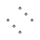
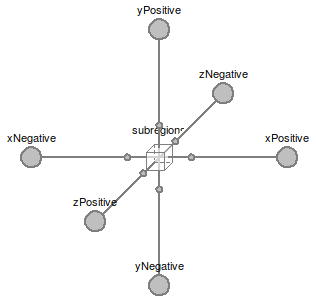
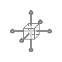
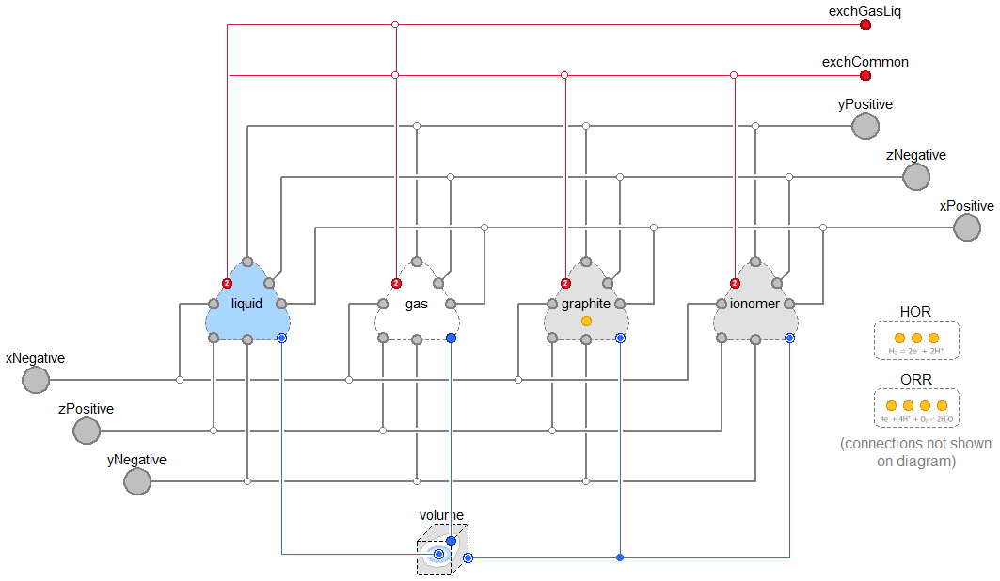

Table of Contents
- User's Guide
- Blocks
- Conditions
- Assemblies
- Regions
- Subregions
- Phases
- Species
- Chemistry
- Connectors
- Characteristics
- Units
- Quantities
- Utilities
- Icons
Download
- Latest: v0.2.1 (2014-01-15)
FCSys.Regions
3D arrays of discrete, interconnected subregionsInformation
Extends from Modelica.Icons.Package (Icon for standard packages).Package Content
| Name | Description |
|---|---|
| Examples | Examples |
| Anode flow plates | |
| Anode gas diffusion layers | |
| Anode catalyst layers | |
| Proton exchange membranes | |
| Cathode catalyst layers | |
| Cathode gas diffusion layers | |
| Cathode flow plates | |
| Region | Base model for a 3D array of subregions |
 FCSys.Regions.Region
Base model for a 3D array of subregions Information
If Lx is an empty vector (e.g., zeros(0),
ones(0), or fill(1, 0)), then there are no
subregions along the x axis and the boundaries along the x axis are
directly connected. The same applies to the other axes.
Parameters
| Type | Name | Default | Description |
|---|---|---|---|
| replaceable model Subregion | Subregions.Subregion | Base subregion model | |
| Geometry | |||
| Length | L_x[:] | {U.cm} | Lengths along the x axis [L] |
| Length | L_y[:] | {U.cm} | Lengths along the y axis [L] |
| Length | L_z[:] | {U.cm} | Lengths across the z axis [L] |
| Assumptions | |||
| Included transport axes | |||
| Boolean | inclTransX | true | X |
| Boolean | inclTransY | true | Y |
| Boolean | inclTransZ | true | Z |
Connectors
| Type | Name | Description |
|---|---|---|
| replaceable model Subregion | Base subregion model | |
| BoundaryBus | xNegative[n_y, n_z] | Negative boundary along the x axis |
| BoundaryBus | xPositive[n_y, n_z] | Positive boundary along the x axis |
| BoundaryBus | yNegative[n_x, n_z] | Negative boundary along the y axis |
| BoundaryBus | yPositive[n_x, n_z] | Positive boundary along the y axis |
| BoundaryBus | zNegative[n_x, n_y] | Negative boundary along the z axis |
| BoundaryBus | zPositive[n_x, n_y] | Positive boundary along the z axis |
Modelica definition
model Region "Base model for a 3D array of subregions" import FCSys.Utilities.Coordinates.cartWrap; // extends FCSys.Icons.Names.Top3; // extends FCSys.Icons.Names.Top6; // Geometric parameters parameter Q.Length L_x[:]={U.cm} "Lengths along the x axis"; parameter Q.Length L_y[:]={U.cm} "Lengths along the y axis"; parameter Q.Length L_z[:]={U.cm} "Lengths across the z axis"; final parameter Integer n_x=size(L_x, 1) "Number of sets of subregions along the x axis"; final parameter Integer n_y=size(L_y, 1) "Number of sets of subregions along the y axis"; final parameter Integer n_z=size(L_z, 1) "Number of sets of subregions along the z axis"; // Assumptions // ----------- // Included transport axes parameter Boolean inclTransX=true "X"; parameter Boolean inclTransY=true "Y"; parameter Boolean inclTransZ=true "Z"; // Auxiliary parameters (for analysis only) final parameter Q.Length L[Axis]={sum(L_x),sum(L_y),sum(L_z)} if hasSubregions "Length"; final parameter Q.Area A[Axis]={L[cartWrap(axis + 1)]*L[cartWrap(axis + 2)] for axis in Axis} if hasSubregions "Cross-sectional areas"; final parameter Q.Volume V=product(L) if hasSubregions "Volume"; replaceable model Subregion = Subregions.Subregion constrainedby FCSys.Subregions.PartialSubregion( final inclTransX=inclTransX, final inclTransY=inclTransY, final inclTransZ=inclTransZ) "Base subregion model"; // Note: In Dymola 2014, the inclTransX, inclTransY, and inclTransZ parameters // still appear in the parameter dialog even though they are final. Subregion subregions[n_x, n_y, n_z](final L={{L_x[i_x],L_y[i_y],L_z[i_z]} for i_z in 1:n_z, i_y in 1:n_y, i_x in 1:n_x}) if hasSubregions "Instances of the subregion model"; Connectors.BoundaryBus xNegative[n_y, n_z] if inclTransX "Negative boundary along the x axis"; Connectors.BoundaryBus xPositive[n_y, n_z] if inclTransX "Positive boundary along the x axis"; Connectors.BoundaryBus yNegative[n_x, n_z] if inclTransY "Negative boundary along the y axis"; Connectors.BoundaryBus yPositive[n_x, n_z] if inclTransY "Positive boundary along the y axis"; Connectors.BoundaryBus zNegative[n_x, n_y] if inclTransZ "Negative boundary along the z axis"; Connectors.BoundaryBus zPositive[n_x, n_y] if inclTransZ "Positive boundary along the z axis"; protected final parameter Boolean hasSubregions=n_x > 0 and n_y > 0 and n_z > 0 "true, if there are any subregions"; equation // X axis connect(xNegative, subregions[1, :, :].xNegative); if inclTransX then for i in 1:n_x - 1 loop connect(subregions[i, :, :].xPositive, subregions[i + 1, :, :].xNegative) "Connection b/w neighboring subregions (not shown in the diagram)"; end for; end if; connect(subregions[n_x, :, :].xPositive, xPositive); if n_x == 0 then connect(xNegative, xPositive) "Direct pass-through (not shown in the diagram)"; end if; // Y axis connect(yNegative, subregions[:, 1, :].yNegative); if inclTransY then for i in 1:n_y - 1 loop connect(subregions[:, i, :].yPositive, subregions[:, i + 1, :].yNegative) "Connection b/w neighboring subregions (not shown in the diagram)"; end for; end if; connect(subregions[:, n_y, :].yPositive, yPositive); if n_y == 0 then connect(yNegative, yPositive) "Direct pass-through (not shown in the diagram)"; end if; // Z axis connect(zNegative, subregions[:, :, 1].zNegative); if inclTransZ then for i in 1:n_z - 1 loop connect(subregions[:, :, i].zPositive, subregions[:, :, i + 1].zNegative) "Connection b/w neighboring subregions (not shown in the diagram)"; end for; end if; connect(zPositive, subregions[:, :, n_z].zPositive); if n_z == 0 then connect(zNegative, zPositive) "Direct pass-through (not shown in the diagram)"; end if; // TODO: Once primitivesVisible is supported by Modelica tools (not // supported as of Dymola 2014), complete the icon of this model. // Until then, the icon should be blank so that the layer models (AnFP, AnGDL, etc.) // are not affected. end Region;
 FCSys.Regions.Region.Subregion
Base subregion model 
Parameters
| Type | Name | Default | Description |
|---|---|---|---|
| CapillaryVolume | volume | Volume with capillary pressure included | |
| Geometry | |||
| Length | L[Axis] | {U.cm,U.cm,U.cm} | Lengths [L] |
| Phases (click to edit) | |||
| Gas | gas | Gas | |
| Graphite | graphite | Graphite | |
| Ionomer | ionomer | Ionomer | |
| Liquid | liquid | Liquid | |
| Independence factors | |||
| ExchangeParams | common | Among all phases | |
| ExchangeParams | gasLiq | Between gas and liquid | |
| Assumptions | |||
| Included transport axes | |||
| Boolean | inclTransX | true | X |
| Boolean | inclTransY | true | Y |
| Boolean | inclTransZ | true | Z |
Connectors
| Type | Name | Description |
|---|---|---|
| BoundaryBus | xNegative | Negative boundary along the x axis |
| BoundaryBus | yNegative | Negative boundary along the y axis |
| BoundaryBus | zNegative | Negative boundary along the z axis |
| BoundaryBus | xPositive | Positive boundary along the x axis |
| BoundaryBus | yPositive | Positive boundary along the y axis |
| BoundaryBus | zPositive | Positive boundary along the z axis |
Modelica definition
replaceable model Subregion = Subregions.Subregion constrainedby FCSys.Subregions.PartialSubregion( final inclTransX=inclTransX, final inclTransY=inclTransY, final inclTransZ=inclTransZ) "Base subregion model";